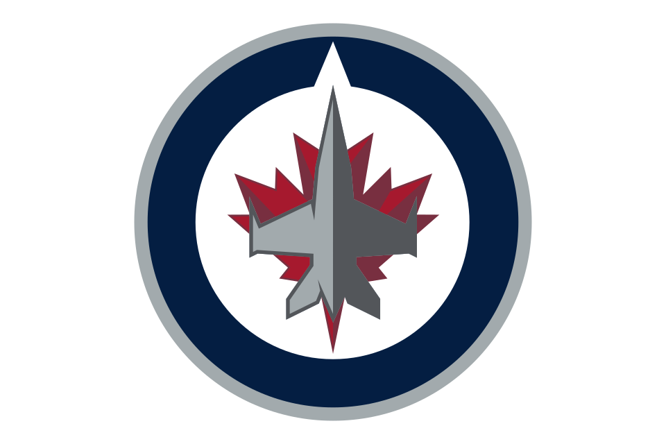

McAvoy thankful to resume Bruins holiday pie delivery
Defenseman resumes tradition after missing last year’s with broken jaw


Atlantic · Eastern Conference · 40 headlines in the last 30 days


Jets vs. Bruins
 Capitals vs. Bruins
Capitals vs. Bruins
 Bruins vs. Red Wings
Bruins vs. Red Wings
 Kings vs. Bruins
Kings vs. Bruins
 Wild vs. Bruins
Wild vs. BruinsDefenseman resumes tradition after missing last year’s with broken jaw


BOSTON (AP) — Boston’s Tanner Jeannot and Winnipeg’s Tyrel Bauer squared off at center ice in the first period on Wednesday night and put on one of the longest fights seen in the NHL in a while.The 6-foot-3 Bauer and the 6-2 Jeannot dropped the gloves near the center circle, then circled for about 20 seconds, looking…

BOSTON (AP) — Morgan Barron scored the tiebreaking goal late in the second period, Nico Daws made 21 saves and the Winnipeg Jets added to their surge with a 4-2 victory over the Boston Bruins on Wednesday night.Kyle Connor and Josh Morrissey each had a goal for Winnipeg, which won its fourth straight road game and…
TSN's Pierre LeBrun reports that the Minnesota Wild view Pavel Zacha as a player of interest, but he also suggests the Boston Bruins might not be looking to move him at this point in time.
The Toronto Maple Leafs have recalled 25-year-old goaltender Artur Akhtyamov from the Toronto Marlies. Here's why.
Here's how the Toronto Maple Leafs could legally leverage their 2027 first-round pick with the Boston Bruins and Philadelphia Flyers if the pick lands in the top 10.


Veteran forward Elias Lindholm authored the first four-goal game of his NHL career, carrying the Bruins past the Washington Capitals 7-5 on Saturday, an effort in which Boston scored three times in the opening nine minutes of the second period.

BOSTON (AP) — Elias Lindholm had the first four-goal game of his NHL career to carry the Boston Bruins past the Washington Capitals 7-5 on Saturday.It was his first hat trick with Boston and the third of his career.
The Boston College men's hockey team will retire the late Johnny Gaudreau's No. 13 on Feb. 12 ahead of its game against UConn at Kelley Rink.
Bruins and Flyers fans will be watching Leafs games this season with an eye toward the 2027 draft lottery.

Swayman makes 20 saves for Boston; Detroit has lost six of seven
When the Bruins fell behind on a gift-wrapped Detroit 2-on-1 late in the first period, you could be forgiven for assuming we were in for another flat performance. However, the B’s responded with a strong second period, got some timely saves from Jeremy Swayman, and skated out of the Motor City with a 4-1 win. […]
The Detroit Red Wings were felled by a 4-1 final score against the Boston Bruins on Wednesday evening at Little Caesars Arena.
DETROIT (AP) — David Pastrnak had a goal and an assist as the Boston Bruins beat Detroit 4-1 on Wednesday night and spoiled the Red Wings’ Centennial celebration game.The contest was played on the 100th anniversary of Detroit’s first NHL game — a 2-0 loss for the then-Cougars to the Bruins.
DETROIT (AP) — David Pastrnak had a goal and an assist as the Boston Bruins beat Detroit 4-1 on Wednesday night and spoiled the Red Wings' Centennial celebration game.The contest was played on the 100th anniversary of Detroit’s first NHL game — a 2-0 loss for the then-Cougars to the Bruins.

From a cross-border debut in Windsor to a century of Original Six intensity, Detroit commemorates its 1926 origins by hosting Boston for a historic anniversary showdown.
Darcy Kuemper stopped 29 shots, including two penalty shots, for his 40th career shutout as the Kings blanked Boston 3-0 to snap a four-game losing streak.


Find game previews, betting intel, broadcast information, stats and highlights here.
If the B's are going to end their 3-game losing streak, the top-six forwards have to improve ASAP.


BOSTON (AP) — Darcy Kuemper stopped 29 shots for his 40th career shutout, including Morgan Geekie’s third-period penalty shot, and Mats Zuccarello scored an early goal as the Los Angeles Kings beat the Boston Bruins 3-0 on Tuesday night to snap a four-game skid.Andre Lee and Erik Gustafsson also scored for the Kings,…


Hartman, Yurov each scores twice for Minnesota, Faber has assist in season debut

BOSTON (AP) — Ryan Hartman and Danila Yurov scored two goals each, Jesper Wallstedt stopped 30 shots, and the Minnesota Wild beat the Boston Bruins 6-2 on Saturday night to extend their road winning streak to eight games.Kirill Kaprizov extended his point streak to 11 games (six goals, 14 assists) with two assists for…
The Montreal Canadiens took two big points from the Boston Bruins on Thursday night, and that was largely thanks to Jacob Fowler.


Josh Anderson and Jake Evans each had a goal and an assist as the Montreal Canadiens leapfrogged the Boston Bruins in the Atlantic Division standings with a 5-2 win on Thursday night.

Welcome to Atlantic Division Hockey, folks! The Bruins and Canadiens renew acquaintances in their first match-up of the 2026-2027 season. Both teams are near the top of the Atlantic Division, so this should be a good one. Bruins! Canadiens! ON A THURSDAY IN NOVEMBER! Discuss.
Montreal Canadiens (11-3-4, in the Atlantic Division) vs. Boston Bruins (13-4-1, in the Atlantic Division)Boston; Thursday, 7 p.